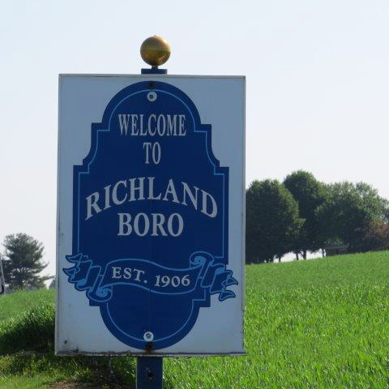

Welcome to the Richland Borough Website. Richland Borough, nestled in the Eastern part of Lebanon County, Pennsylvania, is a picturesque town named  for its fertile soil. Incorporated from Millcreek Township in 1906, the town is unique in that it has an active railroad crossing which intersects the town square. Main Street and Race Street, which also intersect at the square, link the northern and southern portions, as well as the eastern and western portions, of the borough. Thus, the crossing divides the entire town causing Richland to be mentioned in "Ripley's Believe It or Not" books and on the televised game show "Jeopardy".